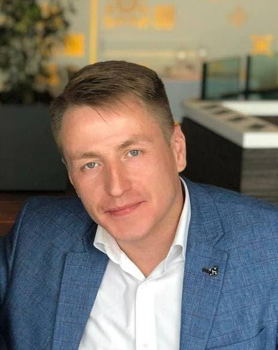

01 / RELIABILITY
Надёжность
Системы должны быть понятными, наблюдаемыми и предсказуемыми в эксплуатации.
DEVOPS / SRE TEAM LEAD · INFRASTRUCTURE ENGINEERING
Дмитрий Парамонов. Более 20 лет в IT и 9+ лет в DevOps/SRE. Проектирую инфраструктурные платформы, автоматизирую delivery и помогаю командам выпускать изменения предсказуемо — от Linux и виртуализации до Kubernetes, CI/CD и практик SRE.
SAINT PETERSBURG · REMOTE / HYBRID · ENGLISH B2 (PUBLISHED CV)

Мой путь объединяет системное администрирование, инфраструктурную инженерию, DevOps/SRE-практики и техническое лидерство. Сильная сторона — видеть систему целиком: от серверов, сетей и ОС до процессов разработки, поставки и эксплуатации сервисов.
Системы должны быть понятными, наблюдаемыми и предсказуемыми в эксплуатации.
Повторяемые процессы превращаются в код, а ручные операции — в исключение.
Архитектура учитывает людей, стоимость, безопасность и жизненный цикл.
Ключевые направления моей инженерной практики — не витрина логотипов, а инструменты для решения задач инфраструктуры и delivery.
Cluster operations, Docker, OpenShift, Helm, networking, storage and troubleshooting.
GitLab CI, TeamCity, Jenkins, release flows, artifact lifecycle and deployment automation.
Prometheus, Grafana, ELK, Zabbix, alerting, service health and operational practices.
SonarQube, Fortify, SAST/DAST concepts, quality gates and security in delivery pipelines.
Практические истории: контекст, ограничения, архитектурные решения, личная зона ответственности и результат. Конфиденциальные детали не публикуются.
Building clusters from the ground up, hybrid infrastructure, container workloads and operational foundations.
Read case →TeamCity, Helm, staged promotion and message broker migration in a large banking environment.
Read case →Virtualization, server estate, configuration automation, backup and monitoring practices.
Read case →AI/ML — развивающееся направление инженерной практики. Фокус на воспроизводимой инфраструктуре: локальные LLM, контейнерное развёртывание, MLflow, experiment tracking, model registry, serving и наблюдаемость.
Explore the lab ↗Технические статьи, шпаргалки и практические руководства по Linux, Docker, Kubernetes, Git, CI/CD, базам данных и архитектуре.
Lightweight browser-based utilities for everyday engineering tasks.
Senior / Lead DevOps · DevOps Team Lead · SRE · Platform Engineering
Professional opportunities, technical leadership, platform architecture and engineering teams.